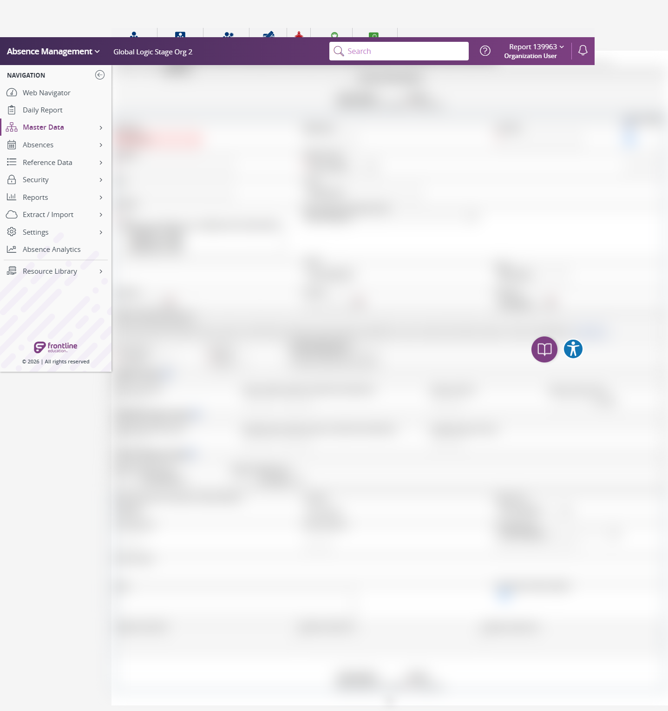

Execution 10 · Add Employee Validation
tests/employee/general-information/add-employee-validation.md · Video 10:41–12:05
10
Execution
10:41–12:05
Continuous-video range
Unattended safe mode
Execution mode
Scenario outcome
Navigation and Add Employee form checks passed: valid values were accepted without submission, empty Apply produced required First Name validation, and maxlength boundaries were enforced. Invalid-format server validation remained NOT TESTED because submitting a more complete record was excluded in safe mode; no employee was created.
Continuous video evidence
Screenshot evidence
{kind=link}

Complete test structure
Source: tests/employee/general-information/add-employee-validation.md
# Add Employee General Information Validation — AES Stage
## Execution directive
Before any browser action, read completely:
1. `instructions/project-instructions.md`
2. `instructions/application-details.md`
3. `instructions/test-data.md`
4. `config/aes-stage.json`
Execute this scenario directly in Chrome using Playwright MCP. Do not generate Playwright or TypeScript code. Run unattended without pausing for password entry or routine confirmation. Save both Markdown and standalone HTML execution reports under `reports/employee/general-information/add-employee-validation/`. Create the report directory when it does not exist.
## Objective
Log in to AES Stage, validate navigation from the React Home page to the classic Import Data experience, validate navigation back from that page to Employee General Information, open Add Employee, and validate the available positive, negative, and edge-case behavior without creating an employee record.
## Preconditions and safety
- Playwright MCP is available.
- Work only on AES Stage at `https://aesstage.flqa.net`; the authentication redirect to `https://idgatewayawsstage.flqa.net` is approved.
- Read the Stage URL and username from `config/aes-stage.json`.
- Before opening the browser, resolve the password from `AES_STAGE_PASSWORD`. If it is unavailable, read `password` from `.secrets/aes-stage.credentials.json`.
- Never print, display, log, screenshot, report, or copy the resolved password. The local credentials file must remain excluded from Git.
- Do not pause or ask the operator for password entry. If neither password source exists or the local value is still a placeholder, mark the run **BLOCKED**, generate both reports, and stop without opening the browser.
- For this scenario, these credential-source rules replace the manual-password-entry instruction in `instructions/test-data.md`.
- Do not record, display, repeat, or screenshot the password.
- Do not select `Apply Changes` when the form contains a complete valid employee because that could create a record.
- If validation requires a save attempt, use incomplete or intentionally invalid data so creation cannot succeed.
- During authentication, `idgatewayawsstage.flqa.net` is an approved login host. After authentication, continue only in the AES Stage application.
- For this scenario, the approved authentication redirect above is the explicit exception to the general different-host stop rule in the shared instructions.
## Steps
### 1. Launch and authenticate
1. Launch Chrome through Playwright MCP and open `https://aesstage.flqa.net`.
- Expected: The AES Stage login page displays visible username and password fields.
2. Enter username `report_139963`.
- Expected: The username field contains `report_139963`.
3. Automatically fill the password field from the resolved secure password source without displaying, recording, echoing, or validating its literal value. Do not pause for user input.
- Expected: The password field is populated automatically and the secret is not exposed in tool output, project files, screenshots, or reports.
4. Select the visible login or sign-in button once and wait for navigation.
- Expected: The application home page is displayed and `Master Data` is available.
### 2. Validate React-to-classic and classic-to-Employee navigation
5. From the React Home/Web Navigator page, select `Extract / Import`.
- Expected: The `Extract / Import` submenu is displayed without an application error.
6. Select `Import Data` from the `Extract / Import` submenu.
- Expected: The classic Import Data page is displayed in AES Stage. In the current Stage build this route may be `/mvc.aspx/dataimport` rather than a `.asp` URL.
7. Verify the destination using visible `Upload Files` or `Import Data` content and the current AES Stage URL/path.
- Expected: The page is identifiable as `Extract / Import` → `Import Data` and remains within the approved Stage application. Record the actual route instead of failing solely because its implementation uses MVC rather than ASP.
8. From the Import Data page, navigate through `Master Data` → `Employee` → `General Information` in that order.
- Expected: Navigation reaches Employee General Information without an application error.
9. Confirm the `Add Employee` link is visible.
- Expected: The React Employee General Information page is displayed and ready for employee maintenance.
### 3. Navigate to Add Employee
10. Select `Add Employee`.
- Expected: The Add Employee form is displayed with its input controls and `Apply Changes` action.
### 4. Positive validation
11. Identify all visible fields, required indicators, field types, dropdown options, date controls, and action buttons.
- Expected: The form structure is observable and enabled as appropriate.
12. Enter the valid synthetic values from `instructions/test-data.md` into the matching fields, selecting exact dropdown or autocomplete options when applicable.
- Expected: Each form control accepts and displays the intended valid value without a client-side validation error.
13. Verify the date fields accept `Birth Date: 03/05/1993`, `Start Date: 09/24/2019`, and `End Date: 09/25/2020` or an equivalent normalized display representing the same dates.
- Expected: All valid dates are accepted, and the end date is later than the start date.
14. Verify the valid email `automationUser@gmail.com`, phone `3788069839`, PIN `69839`, and identifier `7618` are accepted.
- Expected: No format validation error is displayed for valid values.
15. Do not submit the completed valid form. Clear or reset the form before negative testing.
- Expected: No employee record is created.
### 5. Negative validation
16. Attempt validation with all fields empty by selecting `Apply Changes` once only if the action is available.
- Expected: Required-field validation is displayed and no employee is created.
17. Enter an invalid email such as `invalid-email`, while leaving at least one required field empty to prevent creation, and trigger validation safely.
- Expected: The invalid email is rejected or a clear validation error is displayed; no employee is created.
18. Test invalid date input using a non-date value such as `not-a-date`, while keeping the form incomplete.
- Expected: The invalid date is rejected, normalized away, or produces a clear validation error; no employee is created.
19. Test an impossible date such as `02/30/2020`, while keeping the form incomplete.
- Expected: The impossible date is rejected or produces a clear validation error; no employee is created.
20. Test an end date earlier than the start date using `Start Date: 09/25/2020` and `End Date: 09/24/2020`, while keeping the form incomplete.
- Expected: The invalid date range is rejected or produces a clear validation error; no employee is created.
21. Test alphabetic characters in numeric-looking Phone, PIN, and Identifier fields one field at a time, keeping the form incomplete.
- Expected: Each field either blocks unsupported characters or displays a clear validation error; no employee is created.
### 6. Edge-case validation
22. Test leading and trailing spaces in editable text fields using a synthetic value such as ` Emp_Auto_7618 `, without submitting a complete form.
- Expected: Spaces are handled consistently by trimming, preserving, or validating them; observed behavior is recorded.
23. Test the smallest safely enterable value (one character or one digit) in editable text and numeric-looking fields, one at a time.
- Expected: The field accepts the value when allowed or displays a documented validation constraint without breaking the page.
24. Test a long synthetic value by typing until the UI stops accepting characters or reaches a visible maximum, without bypassing browser controls.
- Expected: The field enforces a maximum length or remains stable; the observed limit is recorded. Do not paste an excessively large payload.
25. Test special characters such as `O'Neil-Test` in a name field and `+1 (555) 010-7618` in the phone field, one at a time, while keeping the form incomplete.
- Expected: Supported characters are accepted; unsupported formats receive clear validation feedback; the page remains stable.
26. Test date-boundary behavior with a leap date `02/29/2020` and a non-leap date `02/29/2019`, one at a time.
- Expected: The valid leap date is accepted and the invalid non-leap date is rejected or flagged.
27. Verify keyboard focus and tab navigation across visible form controls and actions.
- Expected: Focus moves in a logical order and focused controls remain operable.
### 7. Final verification and cleanup
28. Confirm the browser is on the AES Stage application after the approved authentication redirect and the Add Employee page is responsive.
- Expected: No unapproved redirect, unhandled error, or broken layout is present.
29. Clear/reset all entered test values or navigate away without saving.
- Expected: No employee record is created and no cleanup record is required.
## Result classification
- Mark **PASS** only if navigation succeeds and every executed validation behaves as expected.
- Mark **FAIL** for application errors, missing required validation, accepted invalid values that can be safely demonstrated, or unstable UI behavior.
- Mark **BLOCKED** for authentication, permission, environment, unavailable-control, or safety restrictions.
- Mark an individual case **NOT TESTED** when the visible form lacks the relevant control or safely triggering validation is impossible.
## Reporting
Create both files with the same timestamp:
1. `reports/employee/general-information/add-employee-validation/add-employee-validation-<YYYYMMDD-HHMMSS>.md`
2. `reports/employee/general-information/add-employee-validation/add-employee-validation-<YYYYMMDD-HHMMSS>.html`
Both reports must contain start/finish times, environment URL, overall status, every case's action/expected/actual/status, safe error details, screenshot paths, and cleanup status. Put every failed case in a separate **Failed scenarios** section with numbered steps to reproduce, expected result, actual result, and safety/cleanup notes. Keep this section visually distinct from the complete results table.
Treat the following seven major sections as independently reportable flows:
1. Launch and authenticate
2. React Home → Import Data → Employee General Information navigation
3. Navigate to Add Employee
4. Positive validation
5. Negative validation
6. Edge-case validation
7. Final verification and cleanup
At the top of both reports, show separate summary totals for:
- Total flows
- Flows passed
- Flows failed
- Flows blocked
- Test cases passed, failed, blocked, and not tested; keep these case totals separate from flow totals
Include a visually distinct **Scenario outcomes** section with one card or entry for each of the seven flows. Every outcome must contain:
1. Flow number and complete flow name
2. A short actual-result summary stating what worked or failed
3. A prominent final status: **PASS**, **FAIL**, or **BLOCKED**
Example:
> **2 · React Home → Import Data → Employee General Information**
>
> Import Data loaded, navigation returned to Employee General Information, and Add Employee was visible.
>
> **PASS**
Determine every flow independently. A flow is **PASS** only when all cases within that flow pass. If any case fails, mark that flow **FAIL**. If execution cannot safely continue, mark the affected flow and all unexecuted dependent flows **BLOCKED**. The overall report is **PASS** only when all seven flows pass.
The HTML report must be a polished, standalone, responsive document that opens directly in a browser without external dependencies. Include:
- Overall status, flow totals, and separate test-case Pass/Fail/Blocked/Not Tested totals
- A Scenario outcomes section with all seven flow names, actual-result summaries, and prominent PASS/FAIL/BLOCKED statuses
- Executive summary and a visually distinct failed-scenarios section with steps to reproduce
- Searchable and status-filterable test-results table
- Observed boundary or maximum-length comparisons
- Safety and cleanup summary
- Print-friendly styling
Never include the password, environment-variable value, tokens, cookies, authentication fragments, or other secrets in either report.
## One-line invocation
After either `AES_STAGE_PASSWORD` or `.secrets/aes-stage.credentials.json` is configured securely, the operator only needs to request:
`Execute tests/employee/general-information/add-employee-validation.md`
Safety and cleanup
No password, token, cookie, or authentication fragment is included. Unattended safe mode did not create, update, or delete persistent staging records.